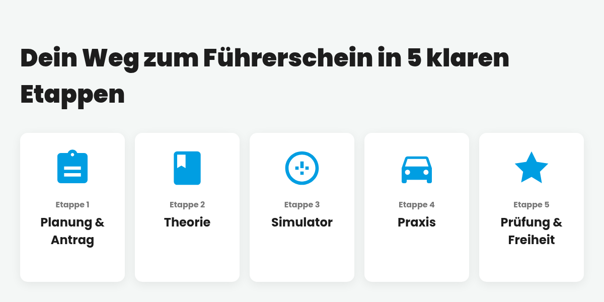

Das Anti-Chaos-Prinzip: Mit unserem 5-Meilenstein-Plan sicher zum Führerschein
Der Gedanke an den Führerschein weckt Träume von Freiheit und Unabhängigkeit – das Lenkrad in der Hand, die Lieblingsmusik im Radio und die Welt vor dir. Doch der Weg bei deiner Ausbildung für den Autoführerschein ist oft das genaue Gegenteil: ein undurchsichtiger Dschungel aus vagen Versprechungen, verschobenen Terminen und einem ständigen Gefühl der Unsicherheit. Dieses "Fahrschul-Chaos" raubt nicht nur Nerven, sondern auch wertvolle Zeit und teures Geld. Stell dir vor, du könntest diesen unsicheren Pfad gegen eine klare, beleuchtete Autobahn tauschen – ein System, das dich nicht im Ungewissen lässt, sondern dich souverän und planbar ans Ziel führt.
Das Wichtigste in Kürze
- Absolute Planbarkeit: Unser 5-Meilenstein-Plan verwandelt deine Ausbildung in ein transparentes, managebares Projekt mit klaren Etappen und festen Terminen.
- Garantierte Stressreduktion: Indem wir Unsicherheit durch Struktur ersetzen, nimmst du jede Hürde mit mehr Selbstvertrauen und weniger Prüfungsangst.
- Nachweisliche Kosteneffizienz: Der bewährte Prozess mit praxisnaher Theorie und Simulator-Training verhindert unnötige Fahrstunden und schont deinen Geldbeutel.
Die bittere Realität: Warum die meisten Fahrausbildungen im Chaos enden
Du kennst die Horrorgeschichten. Vielleicht hast du sie selbst von Freunden gehört oder in Online-Foren gelesen. Da wird von Fahrstunden berichtet, die fünf Minuten vor Beginn per WhatsApp abgesagt werden. Von Fahrlehrern, die jede Stunde wechseln und sich jedes Mal aufs Neue fragen: "Wo waren wir nochmal stehengeblieben?". Es entsteht ein zermürbendes Gefühl, auf der Stelle zu treten, ohne zu wissen, wie viele Stunden oder wie viele Hunderte von Euros noch nötig sind, bis man endlich prüfungsreif ist. Man fühlt sich nicht wie ein geschätzter Partner auf dem Weg zum Erfolg, sondern wie eine austauschbare Nummer in einem schlecht organisierten System. Genau diese Frustration ist der Nährboden für Prüfungsangst und explodierende Kosten.
Das Anti-Chaos-Prinzip: Unsere Antwort auf deine größte Sorge
Aufbauend auf unseren über 65 Jahren Erfahrung haben wir die Probleme und Ängste von Tausenden von Fahrschülern analysiert. Das Ergebnis dieser Analyse ist eine einfache, aber kraftvolle Erkenntnis: Vertrauen und Erfolg basieren auf einem transparenten, verlässlichen Prozess. Aus dieser Überzeugung heraus haben wir das Anti-Chaos-Prinzip ins Leben gerufen. Es ist unser feierliches Versprechen an dich. Das Herzstück und gleichzeitig das Werkzeug dieses Versprechens ist unser systematischer 5-Meilenstein-Plan. Er ist der Fels in der Brandung des Fahrschul-Alltags, umgesetzt von unserem erfahrenen Team, das dich nicht nur als Schüler, sondern als Partner sieht.
"Alles super organisiert und man hatte immer einen Plan. Top!"
Dein Weg zum Führerschein in 5 klaren Etappen
Schritt 1: Dein Check-in & die perfekte Planung
Der erste Schritt ist der wichtigste, denn er schafft das Fundament für alles Weitere: absolute Klarheit. Sobald du bei uns an Bord bist, nehmen wir dich an die Hand. Wir kümmern uns um den gesamten bürokratischen Aufwand – von der Anmeldung bei der Behörde bis zur Koordination von Sehtest und Erste-Hilfe-Kurs. Aber vor allem erstellen wir gemeinsam deinen persönlichen Ausbildungsplan in unserer DriveBuzzApp. Das bedeutet: Alle Theoriestunden und die ersten Fahrstundenblöcke werden fest terminiert. Du verlässt uns nach dem ersten Tag mit einem konkreten Fahrplan in der Hand und dem beruhigenden Gefühl, genau zu wissen, was wann auf dich zukommt.
Schritt 2: Das Fundament – Praxisnahe Theorie ("Mental Replay")
Wer glaubt, Theoriestunden seien langweilig, war noch nicht bei uns. Mit unserem Theorie-Konzept in 7 Tagen verbannst du nicht nur trockenes Wissen in dein Kurzzeitgedächtnis. Wir nutzen eine Methode, die wir "Mental Replay" nennen. Anhand von echten Fallbeispielen aus Dortmund spielst du komplexe Verkehrssituationen immer wieder im Kopf durch. Das Ergebnis? Du verstehst die Logik hinter den Regeln so tiefgreifend, dass du in der Praxis intuitiv richtig handelst. Das stärkt nicht nur dein Selbstvertrauen, sondern bereitet dich so gut vor, dass du auf der Straße weniger Zeit für die Grundlagen benötigst.
Schritt 3: Die Generalprobe – Sicher im Simulator ("Fahrstundensparer")
Stell dir einen Flugsimulator für die Straße vor. Bevor du dich dem realen Verkehr stellst, übst du in unserem High-Tech-Fahrsimulator die anspruchsvollsten Manöver. Das Anfahren an der steilsten Kreuzung in deinem Viertel? Das richtige Verhalten auf der Autobahn bei Starkregen? Einparken in eine enge Lücke? All das trainierst du hier in einer absolut sicheren und fehlerverzeihenden Umgebung. Jede hier gewonnene Minute an Sicherheit und Routine ist eine kluge Investition, die sich am Ende auszahlt und dir nachweislich bares Geld spart, da du weniger teure Real-Fahrstunden benötigst.
Schritt 4: Dein Revier – Effiziente Fahrstunden auf der Straße
Jetzt wird die Theorie zur Praxis. Perfekt vorbereitet und mit einem festen Fahrlehrer an deiner Seite, der deine Stärken und Schwächen kennt, eroberst du die Straßen Dortmunds. Bei uns gibt es kein "Stunden-Absitzen". Jede einzelne Fahrstunde hat ein klares Ziel und ist darauf ausgelegt, dich maximal effizient voranzubringen. Durch diese Kontinuität entsteht ein tiefes Vertrauensverhältnis, das es dir ermöglicht, auch schwierige Manöver entspannt anzugehen und echtes, nachhaltiges Selbstvertrauen hinter dem Steuer aufzubauen.
Schritt 5: Das Finale – Dein "Heimspiel" bei der Prüfung
Der Tag der praktischen Prüfung ist für viele der stressigste Moment der gesamten Ausbildung. Um diese Anspannung drastisch zu reduzieren, setzen wir konsequent auf unser "Heimvorteil"-Konzept. Das bedeutet: Deine Prüfung findet exakt in dem Stadtteil statt, in dem du unzählige Male geübt hast. Du kennst die Tücken der Kreuzungen, die Tempolimits, die Einbahnstraßen. Es fühlt sich nicht an wie ein Sprung ins kalte Wasser, sondern wie eine letzte, souveräne Runde in deinem Revier. Das gibt dir die mentale Stärke, um zu zeigen, was du wirklich kannst.
Was bedeutet dieser Plan für dich ganz konkret?
- Volle Planungssicherheit und Kontrolle: Du kennst deine Termine, deinen Fahrlehrer und deinen finanziellen Rahmen. Du bist der Kapitän deiner Ausbildung, wir sind dein erfahrener Lotse.
- Garantiert keine bösen Überraschungen: Unser Prozess eliminiert die üblichen Unsicherheitsfaktoren. Das bedeutet weniger Stress, weniger Frust und mehr Freude am Fahrenlernen.
- Messbare Kosteneffizienz: Du investierst in einen Prozess, der darauf ausgelegt ist, dich auf dem direktesten Weg zum Ziel zu bringen, ohne unnötige und teure Umwege.
- Eine spürbar schnellere Ausbildung: Ein klarer Plan ist immer die schnellste Route. Unsere Systematik sorgt dafür, dass du ohne Leerlauf und Wartezeiten vorankommst.
- Ein echtes Partnerschaftsgefühl: Wir arbeiten nicht nur für dich, sondern mit dir. Dein Erfolg ist unser gemeinsames Ziel, und das spürst du in jeder Interaktion.
Hol dir deinen Plan!
Willst du bei der Wahl deiner Fahrschule auf Nummer sicher gehen? Unsere exklusive "Anti-Chaos-Checkliste" gibt dir die 10 entscheidenden Fragen an die Hand, die du jeder Fahrschule stellen musst, um die Spreu vom Weizen zu trennen. Ein Muss für jeden, der clever starten will.
Jetzt die kostenlose Anti-Chaos-Checkliste herunterladen!Häufig gestellte Fragen (FAQ) zu unserem Prozess
Wie lange dauert der Prozess von Anmeldung bis Prüfung wirklich?
Dank unseres strukturierten Plans und der Möglichkeit von Intensivkursen ist die Ausbildungsdauer deutlich kürzer als im Branchendurchschnitt. Dein persönlicher Zeitplan wird direkt bei Meilenstein 1 festgelegt, was dir volle Planungssicherheit gibt.
Was passiert, wenn ich einen Termin absagen muss?
Wir verstehen, dass das Leben manchmal dazwischenkommt. Unsere DriveBuzzApp und unser Büro-Team ermöglichen eine einfache und transparente Kommunikation, um Termine im Rahmen der geltenden Fristen unkompliziert zu verschieben.
Ist dieser strukturierte Plan nicht viel teurer?
Im Gegenteil! Der strukturierte Plan ist darauf ausgelegt, Kosten zu sparen. Durch die effiziente Theorie und das Simulator-Training reduzieren wir die Anzahl der benötigten, teuren Fahrstunden auf der Straße. Du zahlst für Effizienz, nicht für unnötige Runden um den Block.
Bereit für eine Ausbildung, die dich mit Sicherheit und Freude ans Ziel bringt? Plane jetzt dein kostenloses und unverbindliches Beratungsgespräch!
Jetzt bist du dran: Was ist deine größte Sorge bei der Führerscheinausbildung und welcher Meilenstein gibt dir das beste Gefühl? Wir sind gespannt auf deine Gedanken in den Kommentaren!